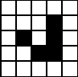
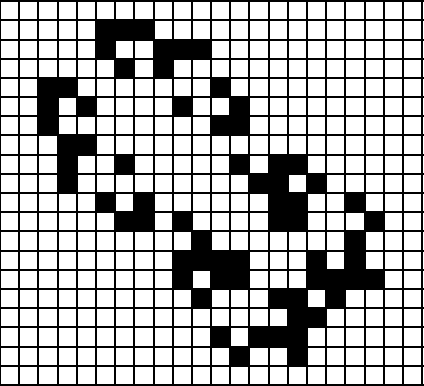
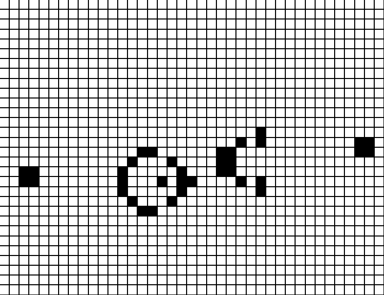
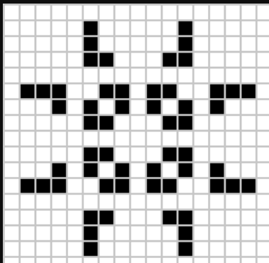
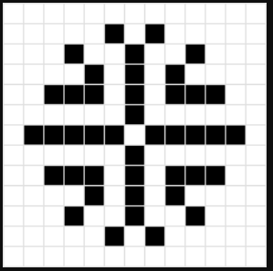
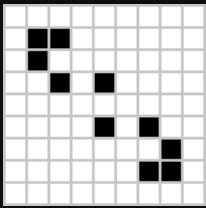
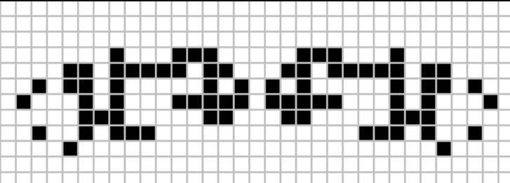
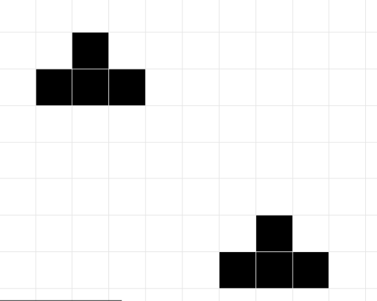
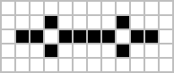

Conway's Game of Life, or simply "Life," is a cellular automaton devised by British mathematician John Horton Conway in 1970. It is a zero-player game, meaning its evolution is determined by its initial state, requiring no further input. Players interact with the game by creating an initial configuration and observing how it evolves. The game is Turing complete and can simulate a universal constructor or any other Turing machine.
The universe of the Game of Life is an infinite, two-dimensional orthogonal grid of square cells, Each cell is in one of two possible states, ALIVE or DEAD. Every cell interacts with its eight neighbors, which are the cells that are horizontally, vertically, or diagonally adjacent.
The first generation is created by applying the above rules simultaneously to every cell in the seed, alive or dead; births and deaths occur simultaneously, and the discrete moment at which this happens is sometimes called a tick. Each generation is a pure function of the preceding one.

| Button | Keyboard Shortcuts | What they do |
|---|---|---|
| or | Starts the animation after you've set the initial pattern | |
| or | Pauses the animation | |
| or | Decreases the speed of the animation | |
| or | Increases the speed of the animation | |
| or | Clears the grid on click, only if the game is not animating at that moment | |
| Randomly initializes the grid with initial randomness as 20% | ||
| change grid size by changing grid height | ||
| Access the nth number of history (1st to 5th last) |
| Slider/Toggler | Keyboard shortcut | What they do |
|---|---|---|
| Increases the Randomness value by 5% | ||
| Decreases the Randomness value by 5% | ||
| Toggles Gridlines On / Off | ||
| Toggles Music On / Off | ||
| Toggles Wrapping around the edges On / Off |
The glider is the smallest, most common, and first-discovered spaceship in Game of Life. It travels diagonally across the grid. Gliders are important because they are easily produced (by glider guns and rakes), can be collided with each other to form more complicated patterns, and can be used to transmit information over long distances.
The big glider was found by Dean Hickerson in December 1989 and was the first known diagonal spaceship other than the glider. Two gliders can be temporarily seen at the front of the ship; these do not stay gliders but still move like them.
The Gosper glider gun is the first known gun, and indeed the first known finite pattern with unbounded growth, found by Bill Gosper in November 1970. It consists of two queen bee shuttles stabilized by two blocks.
The pulsar is a period-3 oscillator, meaning it returns to its initial state after three generations. It’s a symmetric pattern and one of the most recognized oscillators in the Game of Life.
This term isn’t standard in the Game of Life nomenclature but could refer to a specific type of oscillator or a similar repeating pattern that creates a visual effect resembling a circle of fire.
The quadpole is the eighth most common oscillator in Achim Flammenkamp's census, being less common than the bipole but more common than the great on-off. It is the eighth most common oscillator on Adam P. Goucher's Catagolue.
Spider is a c/5 orthogonal spaceship that was discovered by David Bell on April 14, 1997. It is the smallest known c/5 orthogonal spaceship. Its side sparks have proven to be very useful in constructing puffers and rakes.
The middleweight spaceship (commonly abbreviated to MWSS) or (rarely) medium fish is the third most common spaceship after the glider and lightweight spaceship. It was found by John Conway in 1970 and travels at c/2 orthogonally. It can support various non-standard components, such as pushalong 1.

Boat-tie is the twentieth most common still life on Adam P. Goucher's Catagolue, being less common than shillelagh but more common than snake. It is also the twenty-seventh most common object overall on Catagolue. Two copies of boat-tie can be seen in a symmetric constellation that evolves from two traffic light predecessors.
The Pentadecathlon is a period-15 oscillator that was found in 1970 by John Conway. It is one of the most well-known patterns in the Game of Life, notable for its longevity and distinctive structure. It is composed of 10 cells in a row that form a stable pattern with a period of 15 generations, making it a popular subject of study and demonstration in the Game of Life.
Conway's Game of Life is a fascinating exploration of life, death, and the rules that govern them. Despite its simplicity, it can lead to complex and beautiful patterns. Game of Life offers a unique way to explore the unpredictable beauty of life itself.